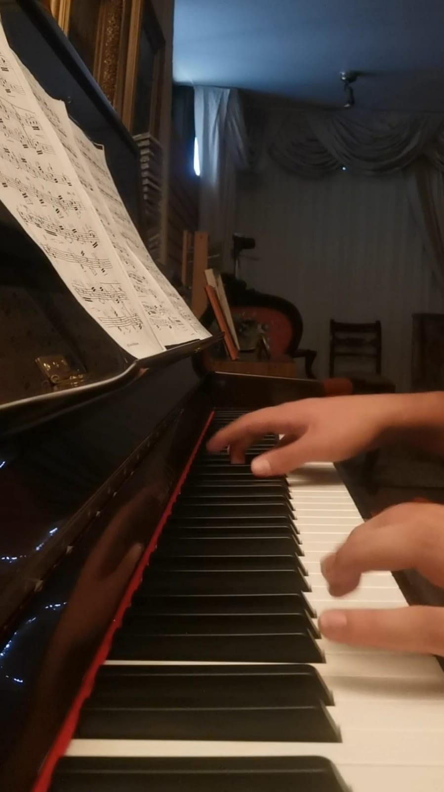

¡Hola! Mi nombre es Matías Garín Avendaño. Soy estudiante de Ingeniería Civil Informática de la Universidad Adolfo Ibáñez, ingresado el año 2021 a la carrera de Plan Común de Ingeniería Civil Ésta es mi foto para que se familiaricen un poco más conmigo.
Entre mis pasatiempos se encuentra lo siguiente:
-Ir al gimnasio
-Jugar Basketball
-Tocar piano
-Jugar videojuegos
Me considero una persona disciplinada y versátil. Voy al día con el progreso en mi carrera (no me he atrasado).
Hice el Taller de Investigación Dirigida paralelo a otros 8 ramos que rendí el pasado semestre 2023/1.
También, todos mis logros los últimos 2 años (excluyendo la pandemia, puesto que antes de ella también hacía mucho deporte)
los he hecho paralelo a una costumbre de hacer deporte por lo menos 6 veces a la semana aproximadamente 2-3 horas al día.
Aquí se encuentran algunas fotos mías haciendo algunos de mis hobbies:
